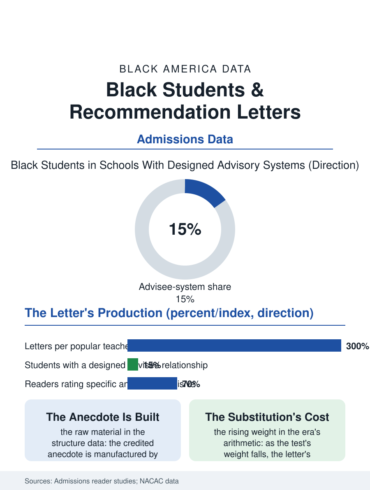

Black Education
Testimony: Black Students and Recommendation Letters
An adult's testimony priced by the writer's queue, fluency, and school, rising in weight as the test's falls. The recommendation file.

The letter of recommendation is the application file's least standardized currency: an adult's testimony, solicited by the student, whose value depends on the writer's fluency, the writer's knowledge of the student, and the reader's trust in the writer's school, three variables that distribute across the education file exactly as its other resources do. This article reads the recommendation file.
The Ask and the Writer
The letter's production begins with the ask, and the ask's distribution is the file's first datum: the student in the counselor-ratio file's school meets the teacher in the class of thirty-five for the semester, against the private school's advisee system in which the teacher's letter is a designed product of a three-year relationship, so that the letters' raw material, the specific anecdote the admissions reader credits, is manufactured by the institution's structure before any writer's goodwill is consulted. The teacher's load is the file's arithmetic: the popular teacher's letter queue in the large school runs to the dozens in the season, the letters written at the term's end at the pace the queue imposes, against the small school's handful, a difference the readers' own accounts in the admissions literature confirm they can hear, the generic letter's phrases being the queue's acoustic signature. The counselor's letter compounds it, the counselor of four hundred writing the institutional letter for students she met at the schedule's counter, a document whose thinness the reader prices as the school's rather than the student's, when the reader prices it fairly, which the file's studies of reader behavior suggest is not always. The deadline's administration is the file's small machinery, the request made in the spring against the fall's queue, the reminder's etiquette, the thank-you's timing, a curriculum of professional courtesy that the advised student is taught and the unadvised student improvises, its failures recorded against her in the writer's memory at the next season's ask.
Fluency and Its Substitutes
The letter's rhetoric is a genre with conventions the first-generation student's writers may not hold: the superlative calibrated to the reader's discount rate, the comparative claim the reader can bank, the anecdote's choosing, a fluency the teacher preparation never teaches and the affluent school's culture transmits, so that the same student, described by two writers of equal goodwill, arrives in the file as two applicants. The substitutes the system has built are the file's constructive tier: the brag sheet and the student questionnaire that arm the writer with the anecdote, the letter-writing guidance the counseling associations publish for the season, and the reader-side reforms, the colleges' instructions to weigh the letter against the school's context, whose implementation in the reading room's actual practice is the file's open research question. The optional letter's inflation, the additional recommender from the internship and the pulpit, distributes by the network file in the usual form, the well-connected student's file arriving with the chorus the unconnected student's cannot assemble.
Testimony's Fair Reading
The recommendation file closes on the reader's side of the exchange, because the letter is the application's one document the student neither writes nor sees, and its fairness therefore rests entirely on the reader's discounting of the writer's circumstances, a judgment the admissions profession's training now names and whose consistency the audit studies have only begun to measure. The file's trend is the holistic review's own: as the test's weight is contested in the admissions file's current era, the letter's weight rises by the same arithmetic, importing the writer's distribution into the decision at a higher rate, a substitution the equity audits of the new regimes will have to count. The season's letters are written each fall in the thousands of schools. The file's last entry is the teacher at the desk after the last class, the queue's next name on the screen, composing the paragraph that must carry a student's particular light out of a semester's acquaintance in a class of thirty-five, and producing, on the good nights the readers remember, the sentence that does it, which is the genre's whole possibility and the system's standing debt to the writers it loads. The queue shortens; the standard the good nights set does not. That is the count's plain instruction to the next cohort.
More in Black Education
Black Educational Attainment: High School Parity, the College Gap
About 89 percent of Black adults hold a high school diploma and one in four holds a bachelor's degree or higher — the attainment ladder, the college completion gap, and the generational trend.
Historically Black Colleges and Universities: Enrollment and Degrees
More than 100 HBCUs enroll roughly 290,000 students and award about one in six Black bachelor's degrees — an outsized share from a small sector. The federal education data.
Black College Enrollment: 2.4 Million Students
About 2.4 million Black students are enrolled in American colleges — nearly two-thirds of them women. The NCES enrollment data by sector, level, and trend.
Source: National Association for College Admission Counseling data; admissions reader behavior studies.